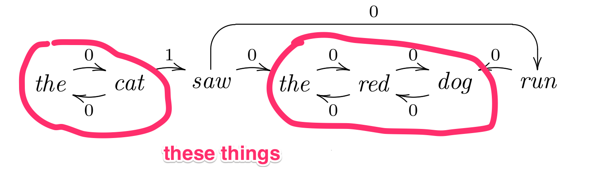

Here's something cool you can do with HMMs
Unsupervised parsing and solving a (relatively) difficult NLP problem with (relatively) simple machine learning and hacks

Hello Austin ML
What this talk is about
- Unsupervised parsing = considered a pretty hard problem
- We achieved new state-of-the-art-results mostly by hacking
- With a little ML (which is why I'm here)
What you'll learn
- A little about HMMs
- Strong baselines are hard to beat
- Don't stop hacking
Hidden Markov models
What? Why?
Science.
Constituent Context Model
Klein & Manning 2002
Assumptions
(here's where the bodies are buried)
The Competition
Datasets for evaluation
What CCL Parser was getting right
So we created a new evaluation
Clumping
Worst. Name. Ever.
Anyway, we found CCL Parser did great at this evaluation
| Overall precision | Clumps precision | |
|---|---|---|
| WSJ | 53.9 | 65.4 |
| Negra | 33.4 | 38.3 |
| CTB | 38.6 | 31.5 |
A new baseline
Right-branching trees, except for the clumps

Our first approach
Simplest. Model. Ever.
It sorta worked
Quick Recap
- Unsupervised parsing is considered kinda hard
- The vast majority of approaches curiously assume gold standard POS
- CCL Parser does not, and performed well
- But we discovered it's real strength was in predicting low level constituents
- Which we inexcusably named "clumps"
Back to the HMMs
Unsupervised Partial Parsing
The same thing with a cooler name
Chunking as a tagging problem
Learning Partial Parsing

Here's the models
Constraints
Evaluation

How to predict trees
Hint: it's a hack